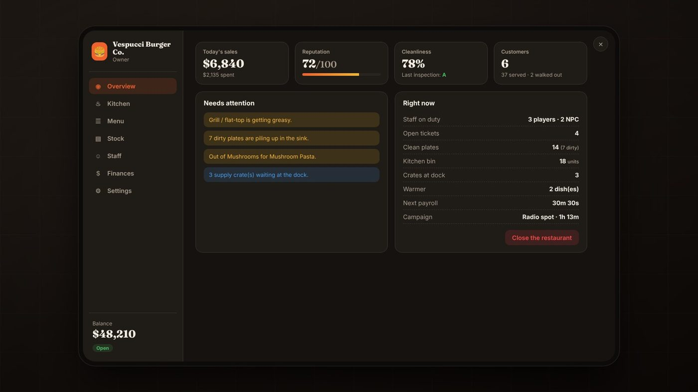
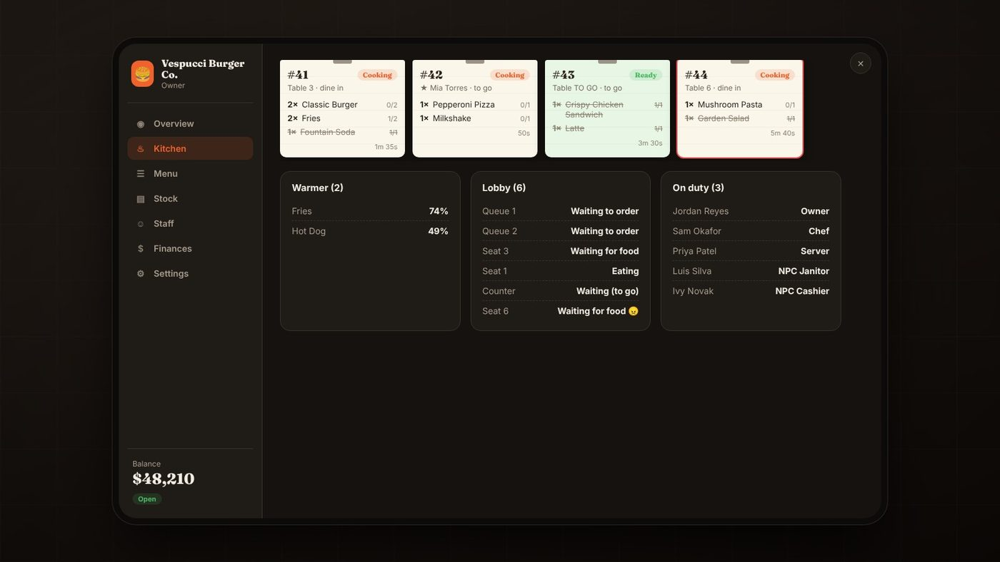
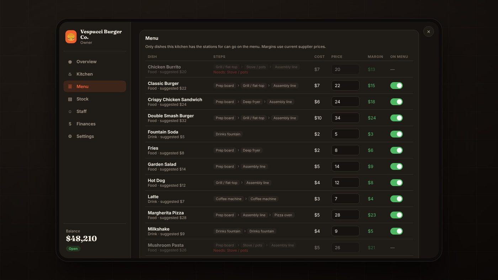
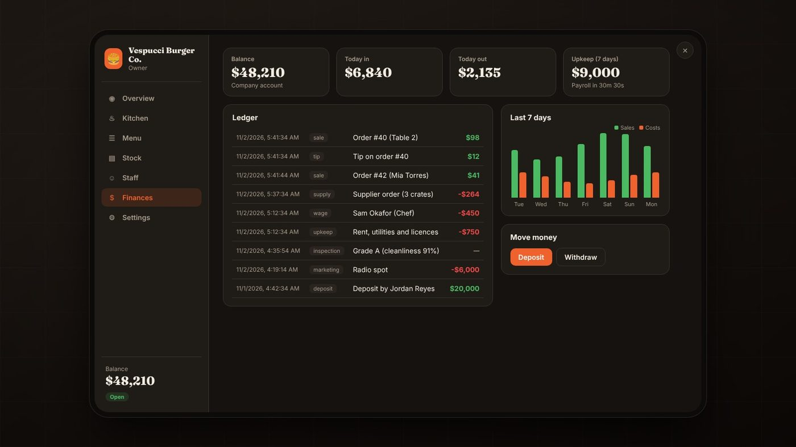

Game projects
bdev-restaurant
Player-owned restaurants for Qbox FiveM servers, built to work in any restaurant interior.




About
Admins walk into any restaurant interior, create a restaurant, and place every station with an in-game tool. Owners then run the business: buy stock that arrives as crates, cook every dish through minigames, serve customers, keep the place clean, hire staff, and survive health inspections.
What it does
- Any interior. No coordinates in config. Every station is placed in-game.
- Supply chain. Ingredients arrive as crates at the dock and spoil over time.
- Cooking. 14 dishes and 11 different minigames, timed and checked by the server.
- Service. NPC customers queue, order, and sit; players order from a menu board.
- Staff and payroll. Hire players or NPCs, with wages, roles, and upkeep each cycle.
- Inspections. Random health inspections grade the restaurant A, B, or C.